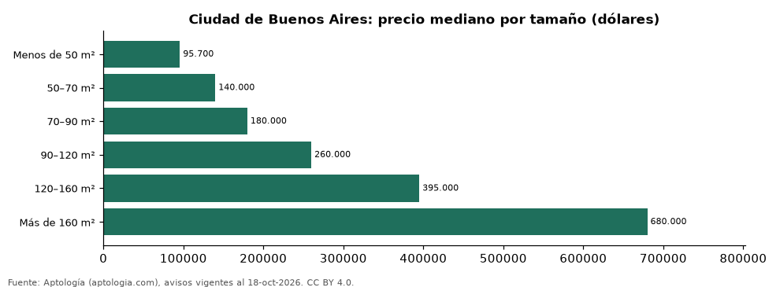

Departamentos en venta en Ciudad de Buenos Aires según tamaño: precio y m² de cada grupo (octubre 2026)
Estudio con datos abiertos (CC BY 4.0). Versión original: https://github.com/elbroker/aptologia-datos/tree/main/estudios/departamentos-en-venta-por-tamano-ciudad-de-buenos-aires-2026 · DOI: 10.5281/zenodo.23516151
En Ciudad de Buenos Aires, un departamento en venta del grupo «Menos de 50 m²» se pide en USD 95.700 en la mediana y uno del grupo «Más de 160 m²» en USD 680.000 (+610,6 %). Por metro cuadrado, el más barato es «70–90 m²» (USD 2.305/m²) y el más caro «Más de 160 m²» (USD 3.136/m²).
Resumen: analizamos 8.293 departamentos en venta en Ciudad de Buenos Aires con tamaño declarado.
Actualizado: 18 de octubre de 2026 (datos del 18 de octubre de 2026) · Próxima actualización: mensual.

Resumen
| Indicador | Valor |
|---|---|
| Menos de 50 m² | USD 95.700 |
| 50–70 m² | USD 140.000 |
| 70–90 m² | USD 180.000 |
| 90–120 m² | USD 260.000 |
| 120–160 m² | USD 395.000 |
| Más de 160 m² | USD 680.000 |
| Avisos | 8.293 |
Precio y m² por tamaño
| Tamaño | Precio (mediana) | Rango típico (P25–P75) | Por m² (mediana) | Área mediana (m²) | Avisos |
|---|---|---|---|---|---|
| Menos de 50 m² | USD 95.700 | USD 74.500 – USD 125.000 | USD 2.587 | 39 | 2.321 |
| 50–70 m² | USD 140.000 | USD 99.500 – USD 189.650 | USD 2.426 | 59 | 1.939 |
| 70–90 m² | USD 180.000 | USD 130.000 – USD 249.825 | USD 2.305 | 78 | 1.286 |
| 90–120 m² | USD 260.000 | USD 179.000 – USD 370.000 | USD 2.582 | 100 | 1.113 |
| 120–160 m² | USD 395.000 | USD 267.000 – USD 571.516 | USD 2.891 | 137 | 747 |
| Más de 160 m² | USD 680.000 | USD 390.000 – USD 1.099.000 | USD 3.136 | 207 | 887 |
Medianas del precio pedido; grupos con menos de 30 avisos se omiten.
Preguntas frecuentes
¿Cuánto cuesta comprar un departamento de qué tamaño en Ciudad de Buenos Aires? Menos de 50 m²: USD 95.700; 50–70 m²: USD 140.000; 70–90 m²: USD 180.000; 90–120 m²: USD 260.000; 120–160 m²: USD 395.000; Más de 160 m²: USD 680.000 (medianas de octubre de 2026).
¿Qué grupo sale más barato por m²? Por metro cuadrado, el más barato es «70–90 m²» (USD 2.305/m²) y el más caro «Más de 160 m²» (USD 3.136/m²).
Metodología
- Fuente: exportes nocturnos de la base de datos de Aptología (aptologia.com) del 18 de octubre de 2026: avisos vigentes de vivienda en portales inmobiliarios de 13 países, recogidos por Aptología y vistos en línea entre el 11 y el 18 de octubre de 2026. Corte: 18 de octubre de 2026.
- Depuración: se eliminan duplicados exactos (misma ciudad, zona, tipo, precio, moneda, área, habitaciones y baños) y los precios fuera del percentil 1–99 de cada país, operación, moneda y tipo; el precio por m² usa solo avisos con área declarada entre 12 y 2.000 m² y también se recorta al P1–P99.
- Qué se mide: precios pedidos (publicados), no precios de cierre. En arriendo, el canon mensual sin administración, gastos comunes ni condominio.
- Muestra mínima: cada cifra publicada se apoya en al menos 30 avisos; las celdas con menos se omiten.
- Monedas: nunca se mezclan avisos de monedas distintas sin convertirlos. Conversión a dólares con la tasa de mercado de ExchangeRate-API (open.er-api.com, actualización del 18 Oct 2026): 1 USD = 3.182,80 COP, 1 USD = 18,47 M.N, 1 USD = 5,09 BRL, 1 USD = 3,44 PEN, 1 USD = 982,44 CLP, 1 USD = 1.514,57 ARS, 1 USD = 40,20 UYU, 1 USD = 5.705,37 PYG, 1 USD = 61,27 DOP, 1 USD = 0,89 EUR, 1 USD = 11,72 BOB; la UF chilena a 41.178,64 CLP (mindicador,cl. 18-oct-2026). Los avisos publicados en dólares se usan tal cual.
- Monedas: en cada ciudad y operación se usa solo la moneda mayoritaria de los avisos (los avisos en otra moneda se excluyen) y la mediana se convierte a dólares con la tasa citada; nunca se promedian avisos de monedas distintas.
- Cordura: solo se publica si la mediana crece con tamaño.
- Limitaciones: la cobertura depende de los portales que recorre Aptología en cada país y es mayor en las ciudades grandes y en los segmentos medio-alto y alto; el área es la que declara el aviso, sin verificar; los nombres de zona vienen de los portales.
- Privacidad: solo se publican agregados; no se publica ningún dato personal, enlace a avisos ni nombre de anunciante.
- Datos abiertos: datos.csv, licencia CC BY 4.0.
Cómo citar
Pinzón Pineda, D. M. (2026). Departamentos en venta en Ciudad de Buenos Aires según tamaño: precio y m² de cada grupo (octubre 2026). Aptología (aptologia.com). https://github.com/elbroker/aptologia-datos/tree/main/estudios/departamentos-en-venta-por-tamano-ciudad-de-buenos-aires-2026. Datos: datos.csv, licencia CC BY 4.0.